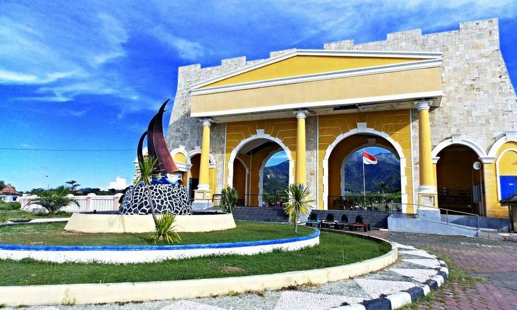

Benteng Portugis

Benteng Portugis adalah salah satu objek wisata andalan di Jepara adalah Benteng Portugis yang terletak di Desa Banyumanis Kecamatan Donorojo atau 45 km di sebelah timur laut Kota Jepara, dan untuk mencapainya tersedia sarana jalan aspal berbatu dan hanya dapat dicapai menggunakan kendaraan pribadi dikarenakan tidak ada rute transportasi umum ke situs sejarah ini.
Dilihat dari sisi geografis benteng ini tampak sangat strategis untuk kepentingan militer khususnya zaman dahulu yang kemampuan tembakan meriamnya terbatas 2 s/d 3 km saja. Benteng ini dibangun di ats sebuah bukit batu di pinggir laut dan persis di depannya terhampar Pulau mondoliko, sehingga praktis selat yang ada di depan benteng ini berada di bawah kendali Meriam Benteng sehingga akan berpengaruh pada pelayaran kapal dari Jepara ke Indonesia bagian timur atau sebaliknya.